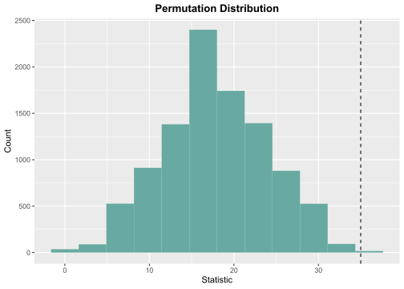

This package implements the tests in chapters 1-5 of Higgins (2003).
It uses R6 for clean OO-design and arrangements for fast generation of permutations.
Installation
You can install the development version of LearnNonparam from GitHub with:
# install.packages("devtools")
devtools::install_github("qddyy/LearnNonparam")Usage
library(LearnNonparam)-
Create a test (for example, a
Wilcoxonobject)t <- Wilcoxon$new(type = "permu", n_permu = 10000)or you can use
pmt(permutation test) function (Recommended):t <- pmt("twosample.wilcoxon", type = "permu", n_permu = 10000) -
feed it the data (a data frame, a list, or some numeric vectors)
t$feed(Table2.6.2) -
check the results
print(t$statistic) #> [1] 35 print(t$p_value) #> [1] 0.0023 print(t$estimate) #> [1] 30.045 print(t$ci) #> [1] 11.57 50.76 t$plot_hist(bins = 12)
-
modify some attributes and see how the results change
t$type <- "approx" print(t$p_value) #> [1] 0.008239019
There is also support for chaining method calls, which means that you can do things like
pmt("twosample.wilcoxon", type = "permu", n_permu = 10000)$feed(Table2.6.2)$plot_hist(bins = 12)$p_valueHelp
Just use ?... syntax.
If you want to know all available methods and attributes, you can start by exploring ?PermuTest (all tests’ base class) first.
If you want to know all available tests, see pmts().
pmts()
#> key test
#> 1 onesample.quantile Quantile Test
#> 2 onesample.ecdf Empirical Cumulative Distribution Function
#> 3 twosample.mean Two Sample Permutation Test (mean)
#> 4 twosample.wilcoxon Two Sample Wilcoxon Test
#> 5 twosample.scoresum Score Sum Test
#> 6 twosample.ansari Ansari-Bradley Test
#> 7 twosample.siegel Siegel-Tukey Test
#> 8 twosample.rmd Ratio Mean Deviance Test
#> 9 twosample.ks Two Sample Kolmogorov-Smirnov Test
#> 10 ksample.anova ANOVA
#> 11 ksample.kw Kruskal-Wallis Test
#> 12 ksample.jt Jonckheere-Terpstra Test
#> 13 multicomp.t Multiple Comparison (t test)
#> 14 multicomp.tukey Tukey HSD
#> 15 paired.comparison Paired Comparison
#> 16 paired.sign Sign Test
#> 17 paired.signedscore Signed Score Test
#> 18 rcbd.anova ANOVA for Randomized Complete Block Design
#> 19 rcbd.friedman Friedman Test
#> 20 rcbd.page Page Test
#> 21 association.corr Two Sample Permutation Test (correlation coefficient)
#> 22 table.chi Contingency Table Permutation Test (chi-square)